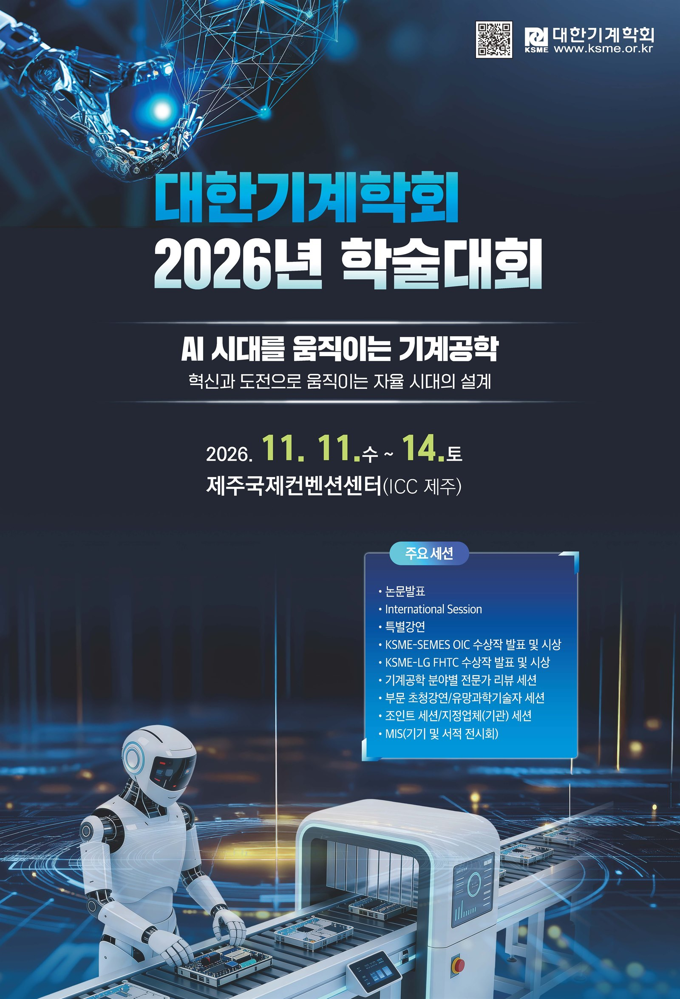

2026년 9월 8일학부연구생 5명, 대한기계학회 2026년 학술대회 초록 제출
IDEA LAB 학부연구생 정승한, 하형진, 유병걸, 최준석, 안동균이 오는 11월 제주에서 개최되는 대한기계학회 2026년 학술대회 초록을 성공적으로 제출했습니다. 다섯 학생은 모두 지난 7월부터 AI 스터디와 각자의 연구를 병행해 왔습니다. 연구를 시작한 지 얼마 되지 않았지만, 모두가 꾸준히 몰입한 덕분에 짧은 기간 안에 결과를 도출할 수 있었습니다.
각 학생의 발표 제목을 클릭하면 초록을 확인할 수 있습니다.
- 정승한 (구두):자연어 기반 CFD 국부 격자 refinement 에이전트
- 하형진 (구두):Diffusion 기반 우주 데이터센터 방열판용 유로 형상 생성
- 유병걸 (구두):표면 곡률 기반 샘플링을 통한 Transformer 기반 3차원 유동장 예측 정확도 개선
- 최준석 (포스터):소형 로컬 LLM 기반 항공기 Text-to-CAD 프레임워크
- 안동균 (포스터):전개형 우주 데이터센터 방열판용 냉각 유로 형상 설계를 위한 생성형 AI